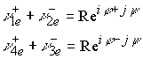
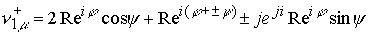
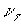
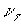

|
В. И. ЕЛИСЕЕВ ВВЕДЕНИЕ В МЕТОДЫ ТЕОРИИ
ФУНКЦИЙ ПРОСТРАНСТВЕННОГО КОМПЛЕКСНОГО ПЕРЕМЕННОГО |
|
10.16. ОТОЖДЕСТВЛЕНИЕ КОМБИНАЦИЙ КОМПЛЕКСНЫХ ПОДПРОСТРАНСТВ С МИКРОЧАСТИЦАМИ КЛАССИФИКАЦИЯ МИКРОЧАСТИЦ В СООТВЕТСТВИИ С РАЗМЕРАМИ ПРОСТРАНСТВА.
Пространство электронного нейтрино является сопряженным пространственным комплексом
|
(10.16.1) |
Пространство  имеет два заряженных подпространства с сингулярными аргументами . Для сокращения записи иногда будем обозначать в виде . Выделим из пространства положительно заряженное подпространство, проведя следующие операции комплексной алгебры
имеет два заряженных подпространства с сингулярными аргументами . Для сокращения записи иногда будем обозначать в виде . Выделим из пространства положительно заряженное подпространство, проведя следующие операции комплексной алгебры
Для сопряженного комплекса будем иметь
Далее также получим

|
(10.16.2) |
Система из четырех возможных пространств с заряженным подпространством определяет положительный заряд в верхнем и нижнем полупространстве –это
. Эти пространства представляют комплекс ,(соответствующей повороту оси  дополнительно на угол ) плюс положительно заряженное подпространство в верхней и нижней полусферы общего пространства.
дополнительно на угол ) плюс положительно заряженное подпространство в верхней и нижней полусферы общего пространства.
Отрицательный заряд соответствует отрицательному повороту незаряженного ядра комплекса на угол плюс отрицательно заряженное подпространство в верхней и нижней полусферах – это .
В классификаторе микрочастиц различают электронное нейтрино с положительным лептонным зарядом и отрицательной спиральностью Закодировано как нейтрино 
А также электронное нейтрино с отрицательным лептонным зарядом и положительной спиральностью
Закодировано как антинейтрино 
Следует принять за
|
(10.16.3) |
Если спиральность отождествить с поворотом комплексной оси  , то нейтрино и антинейтрино имеют спиральность
, то нейтрино и антинейтрино имеют спиральность 
Система (10.16.2) дает возможность оценить взаимодействие пространств разного заряда.
|
 |
(10.16.4) |
Результат можно трактовать как незаряженное лептонное пространство.
Второй вариант
|
(10.16.5) |
На рис 102 представлена геометрическая модель нейтрино как единое пространство с положительным зарядом в нижней и верхней полусферах и нейтральным плоским комплексом, повернутым дополнительно на угол в центре осей координат. Этот поворот и определяет знак спиральности: если поворот против часовой стрелки то спиральность отрицательная, по часовой стрелки у антинейтрино спиральность положительная. При движении мнимой точки с сингулярным аргументом по циклонной кривой  изменяются углы , что приводит к повороту центрального плоского комплекса. Функции, заданные на кривой
изменяются углы , что приводит к повороту центрального плоского комплекса. Функции, заданные на кривой  удовлетворяют условиям дифференцирования в форме Коши и поэтому циклонная кривая является геодезической кривой.
удовлетворяют условиям дифференцирования в форме Коши и поэтому циклонная кривая является геодезической кривой.
Кривая представляет плоскую спираль в каждой своей мнимой точке.
На рис 102 представлена геометрическая модель антинейтрино. Обозначения позволяют оценить разницу в свойствах нейтрино и антинейтрино.
В соответствии с формулами (10.16.5), в центре нейтрино или антинейтрино расположен нейтральный комплекс , который отождествляется с нейтральным гамма –квантом (комплексом в смысле Коши). Комплексное пространство и нейтринное пространство дает возможность детализировать процесс аннигиляции: при аннигиляции нейтрино и антинейтрино происходит образование двух гамма –квантов с кинетической энергией, которая реализуется по изолированному направлению
,
где
Пространство, имеющее один скомпенсированный лептонный туннель по формуле (10.16.5) плюс любая комбинация нейтрино из системы (10.16.2) отождествляется с мюонным нейтрино, например
|
 |
(10.16.6) |
и так далее. Мюонное нейтрино имеет мюонный лептонный заряд
Скомпенсированный лептонный комплекс представляет энергию аннигиляции, которая удерживается в структуре.
Пространство, имеющее два скомпенсированных лептонных зарядовых подпространств плюс одно электронное нейтрино из системы (10.16.2) отождествляется с Тау-нейтрино, например
|
(10.16.7) |
и так далее. Заряд Тау-нейтрино равен
.Системы (10.16.6), (10.16.7) предполагают увеличение количества скомпенсированных зарядовых подпространств, что приведет к открытию новых названий нейтрино. Зарядовое сопряжение для мюонного и Тау-нейтрино остаются по структуре как у электронного нейтрино.
На рис 104 представлена модель мюонного нейтрино. Основным отличием модели является наличие в ядре двух нейтральных плоских контура, один из которых имеет дополнительное вращение по углу
.Модели нейтрино, антинейтрино, мюонного нейтрино даны в координатах
Пространство электрона и позитрона.
Увеличивая размерность комплексного пространства, получим пространство, свойства которого можно отождествить с электроном и позитроном 
|
(10.16.8) |
В этой комплексной размерности можно повторить операции выделения зарядовых подпространств, как это делалось в предыдущей размерности пространства 
Представим пространственный комплекс в виде
|
(10.16.9) |
и выделим зарядовые подпространства
|
(10.16.10) |
Структура системы (10.16.10) повторяет структуру системы (10.16.2) на новом более высоком уровне размерности комплексного пространства и одновременно характеризуется новыми свойствами. Положительно заряженный комплекс имеет закрутку комплекса по двум направлениям , так же как заряженное подпространство этого комплекса можно представить в виде
в итоге
будем иметь
|
(10.16.11) |
Если пространство , то комплексы отождествляются с позитроном , определенным в верней и нижней полусфере комплексного пространства.
Если сложить комплексы, то в пространстве возникнет скомпенсированный электронный туннель
|
(10.16.12) |
Электрон  отождествляется с комплексами
отождествляется с комплексами
|
(10.16.13) |
Незаряженный электронный туннель есть сумма этих комплексов
|
(10.16.14) |
Электрон и позитрон  есть движение заряженного нейтринного пространства по замкнутой пространственной траектории типа ,параметры траектории определяются комплексами из систем (10.16.11), (10.16.13). В центре пространства
есть движение заряженного нейтринного пространства по замкнутой пространственной траектории типа ,параметры траектории определяются комплексами из систем (10.16.11), (10.16.13). В центре пространства  находится заряженное нейтринное пространство
находится заряженное нейтринное пространство
Рассмотрим также комбинации зарядов
|
(10.16.15) |
Полученный результат совпадает с предыдущим (10.16.14) при условии, что для положительного заряда в нижней полусфере пространства  происходит поворот антинейтрино, так что оно превращается в нейтрино.
происходит поворот антинейтрино, так что оно превращается в нейтрино.
Далее
|
(10.16.16) |
Этот результат является переходом нейтрино в отрицательном электрическом заряде, определенным в нижнем полупространстве (Z) в антинейтрино.
Последовательно выделяя зарядовые пространства электрические и лептонные, получим в общем виде структурное сопряжение зарядовых подпространств электрона в виде
Комплекс представляет сумму комплексов в верхнем и нижнем полупространстве, поэтому его можно записать в виде

Знак минус относится к нижнему полупространству лептонного и электрического заряда.
Знак плюс минус перед аргументом в комплексах определяет перезарядку нейтринного пространства относительно электрического в зависимости от положения в верхнем или нижнем полупространстве мнимых электрических точек, поэтому если повернуть угол в третьей и четвертой скобки у вторых членов, то сокращение не произойдет и получим комплекс
|
(10.16.16а) |
Ядро электрона представляет комплекс (первый член) в смысле Коши, электрон имеет лептонный положительный заряд (второй член), электрический заряд (третий член комплекса), смешенный лептонно-электрический заряд (четвертый член комплекса). Структура сопряженных зарядовых пространств электрона пояснена на рис 105.
Циклонная нейтринная кривая типа пространства  представляет часть циклонной кривой пространства
представляет часть циклонной кривой пространства  . В пространстве при полном обороте по кривой
. В пространстве при полном обороте по кривой  имеют приращение . В пространстве приращение аргументов соответствует формуле
имеют приращение . В пространстве приращение аргументов соответствует формуле
Таким образом, один оборот по аргументу, определяющему заряд электрически заряженного подпространства имеем два оборота нейтринного пространства. Это и обеспечивает возможность переориентации нейтринного пространства при переходе из нижней полусферы в верхнюю в пространстве  . Структура заряженных подпространств представлена на рис в координатах
. Структура заряженных подпространств представлена на рис в координатах
Ядро электрона представляет пространство нейтрино и может быть заряженным и нейтральным. Электрически заряженное подпространство включает лептонное подпространство в вершинах своих мнимых точек.
Аннигиляция электрон –позитронной пары также детализируется
,
где
В пространстве  пространство
пространство  являясь изолированным пространством одновременно имеет свои степени свободы по структурированию.
являясь изолированным пространством одновременно имеет свои степени свободы по структурированию.
Пространство  может входить в пространство как нейтральное
может входить в пространство как нейтральное
Рассмотрим комплекс
Комплекс можно отождествить с отрицательно заряженным пионом
|
(10.16.17) |
Положительно заряженный пион  не имеет нейтринного заряда и поэтому представляет сумму положительно электрически заряженных пространств с компенсированными нейтронными комплексами
не имеет нейтринного заряда и поэтому представляет сумму положительно электрически заряженных пространств с компенсированными нейтронными комплексами
Окончательно
|
(10.16.18) |
Пространство нейтрального пиона  не имеет ни электрического ни лептонного заряда, поэтому может соответствовать сумме комплексов (10.16.12), ( 10.16.14
не имеет ни электрического ни лептонного заряда, поэтому может соответствовать сумме комплексов (10.16.12), ( 10.16.14
|
(10.16.19) |
На рис 106 представлено зарядовое сопряжение подпространств отождествляемых с заряженными пионами  .Заряженный пион представляет заряженное электрическое подпространство, в котором лептонные заряды скомпенсированы и равны нулю. Пион не имеет лептонного заряда. В центре пиона расположено ядро из пространства нейтрино
.Заряженный пион представляет заряженное электрическое подпространство, в котором лептонные заряды скомпенсированы и равны нулю. Пион не имеет лептонного заряда. В центре пиона расположено ядро из пространства нейтрино , электрические мнимые точки представляют также пространства нейтрино – нейтральное. Центральное ядро имеет вращение верхней и нижней полусферы в разных направлениях. Мнимые точки электрически заряженного подпространства также имеют вращение около оси , как показано на рис.
, электрические мнимые точки представляют также пространства нейтрино – нейтральное. Центральное ядро имеет вращение верхней и нижней полусферы в разных направлениях. Мнимые точки электрически заряженного подпространства также имеют вращение около оси , как показано на рис.
Если совместить два последних рисунка получим структуру нейтрального пиона
.Мюонное нейтрино  определено по формуле (10.16.6), Тау-нейтрино по формуле (10.16.7). Пространство мюона будет представлено в виде
определено по формуле (10.16.6), Тау-нейтрино по формуле (10.16.7). Пространство мюона будет представлено в виде
|
(10.16.20) |
Мюон имеет заряд электрический и лептонный мюонный заряд. Структура соответствует замене подпространств нейтрального нейтрино в пространстве заряженного пиона на структуру мюонного нейтрино
.Соответственно имеем
|
(10.16.21) |
Структура Тау-лептона по формуле соответствует замене электронного нейтрино на тау-нейтрино в заряженном пионе.
Пространство МЕЗОНОВ
Пионы закодированы в микромире как нестранные мезоны. Далее открыт спектр мезонов с зарядом странность-S, очарование-c, прелесть –b.
Структура пространства этих заряженных частиц повторяет структуру лептонного уровня. Частицы с зарядом странности S определены в пространстве с одним скомпенсированным пионным сингулярным туннелем, а именно
Положительно заряженный  - мезон имеет подпространство, которое отождествляется с положительным электрическим зарядом. Других подпространств с зарядами мезон не имеет. Мезон представляет структуру в точном соответствии основному каналу распада.
- мезон имеет подпространство, которое отождествляется с положительным электрическим зарядом. Других подпространств с зарядами мезон не имеет. Мезон представляет структуру в точном соответствии основному каналу распада.
Нейтральный мезон имеет заряд странность и один скомпенсированный сингулярный туннель, который и определяет наименование этого заряда –S.
В соответствии с каналами распада имеем
|
(10.16.23) |
Применяя формулы (10.16.17), (10.16.18), (10.16.19), получим разные выражения, однако они не нарушают структурной картины. Второй канал распада идет с большей величиной кинетической энергии заряженных пионов.
Очарованные нестранные мезоны имеют два скомпенсированных сингулярных туннеля, что и послужило кодировки заряда – очарование – с.
|
(10.16.24) |
- имеет один скомпенсированный туннель заряда странности – S из двух заряженных пионов плюс один отрицательный пион. Отрицательный пион в каоне совместно с положительным дают второй скомпенсированный туннель.
Мини оглавление:
[0], [1.1.1, 1.1.2, 1.1.3, 1.1.4, 1.1.5, 1.1.6, 1.1.7, 1.1.8, 1.2, 1.2.1, 1.2.2, 1.2.2.a, 1.2.2.b, 1.2.2.c, 1.2.2.d, 1.2.2.e, 1.2.2.f, 1.2.2.g, 1.2.2.h, 1.2.3, 1.3.1, 1.3.2, 1.3.3, 1.3.4, 1.3.5, 1.3.6, 1.4.1, 1.4.2, 1.5, 1.6, 1.7.1, 1.7.2, 1.7.3.1, 1.7.3.2, 1.7.3.3, 1.7.4.1, 1.7.4.2, 1.8.1], [2.1, 2.2],[3.1, 3.2, 3.3, 3.4.1, 3.4.2, 3.4.3, 3.4.4, 3.4.5],[4.1, 4.2, 4.3, 4.4],[5.1, 5.1.Рис.52, 5.2, 5.3, 5.4, 5.4.Т1, 5.4.Т2, 5.4.Т3, 5.5.1, 5.5.2, 5.5.3, 5.5.4],[6.1.1, 6.1.2, 6.2.1, 6.2.2, 6.2.3, 6.2.4, 6.2.5, 6.3, 6.4.1, 6.4.2, 6.5.1, 6.5.2],[7.1, 7.2, 7.3, 7.4, 7.5, 7.6, 7.7.1, 7.7.2, 7.8.1, 7.8.2, 7.8.3, 7.9],[8.1, 8.2.1, 8.2.2, 8.3, 8.4, 8.5, 8.6, 8.6.T1, 8.7, 8.8.1, 8.8.2, 8.8.3, 8.9.1, 8.9.2, 8.9.3, 8.10, 8.10.T2, 8.10.T3],[9.1, 9.2, 9.3, Рис.88, 89, 90, 91, 92, 93, 94, 95, 96, 97, 98, 99, 100],[10.1, 10.2, 10.3, 10.4, 10.5, 10.6, 10.7, 10.8, 10.9, 10.10, 10.11, 10.12, 10.13, 10.14, 10.15.1, 10.15.2, 10.16.1, 10.16.2, 10.17, 10.18],[11]
Размещенный материал является электронной версией книги: © В.И.Елисеев, "Введение в методы теории функций пространственного комплексного переменного", изданной Центром научно-технического творчества молодежи Алгоритм. - М.:, НИАТ. - 1990. Шифр Д7-90/83308. в каталоге Государственной публичной научно-технической библиотеки. Сайт действует с 10 августа 1998.
E-mail: mathsru@gmail.com